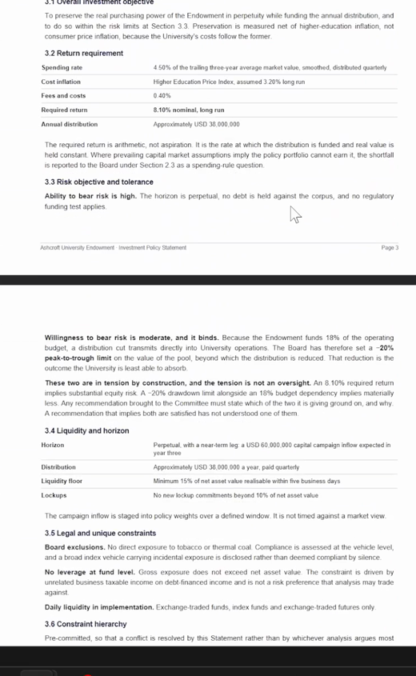
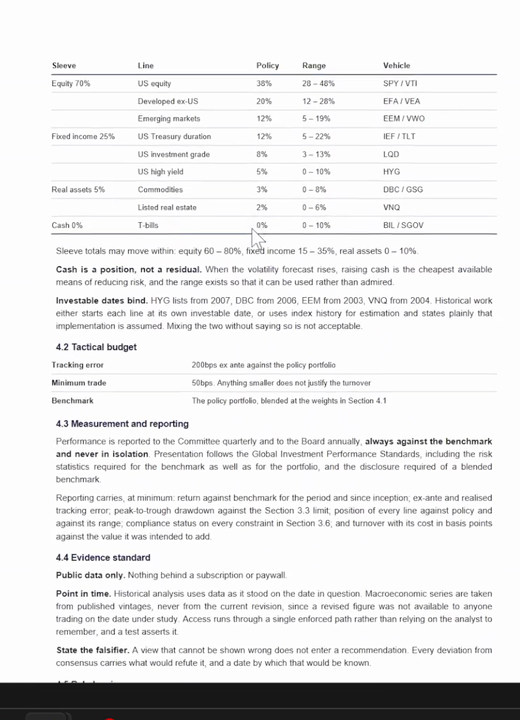
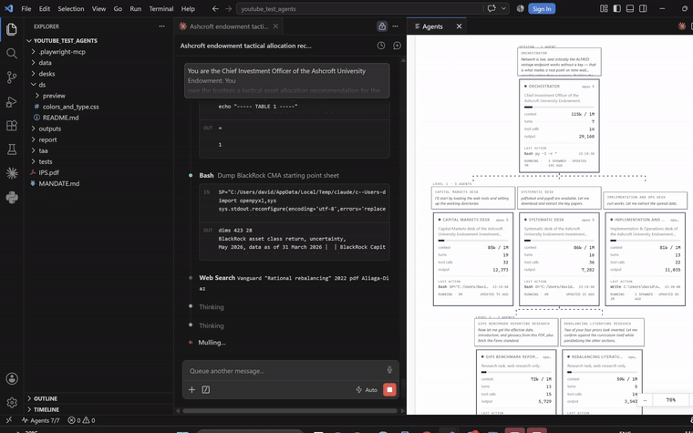
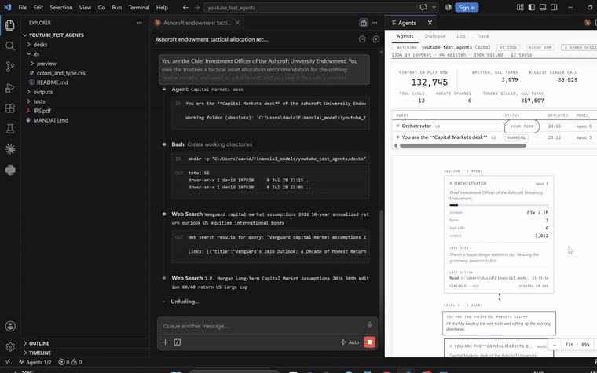
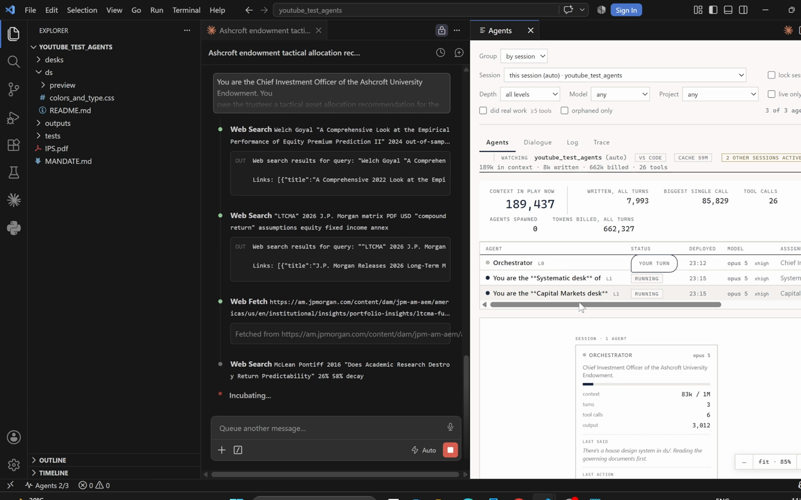
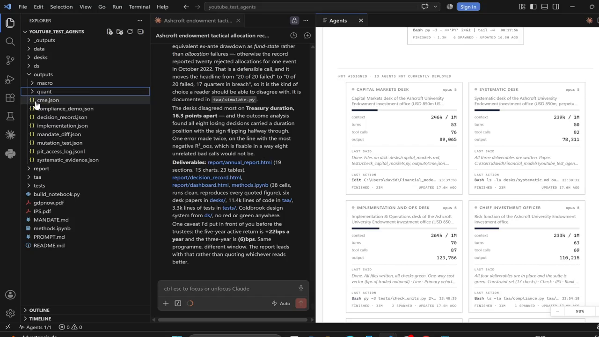
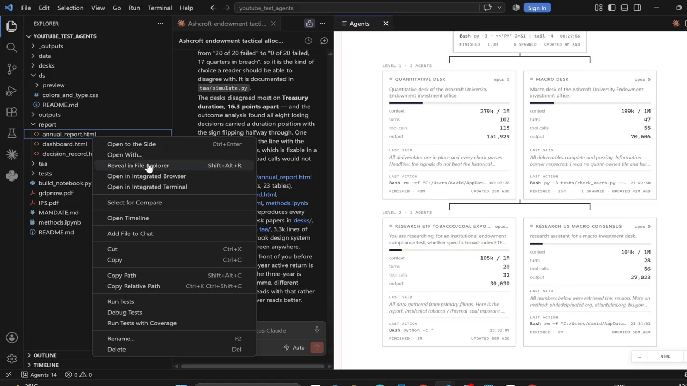
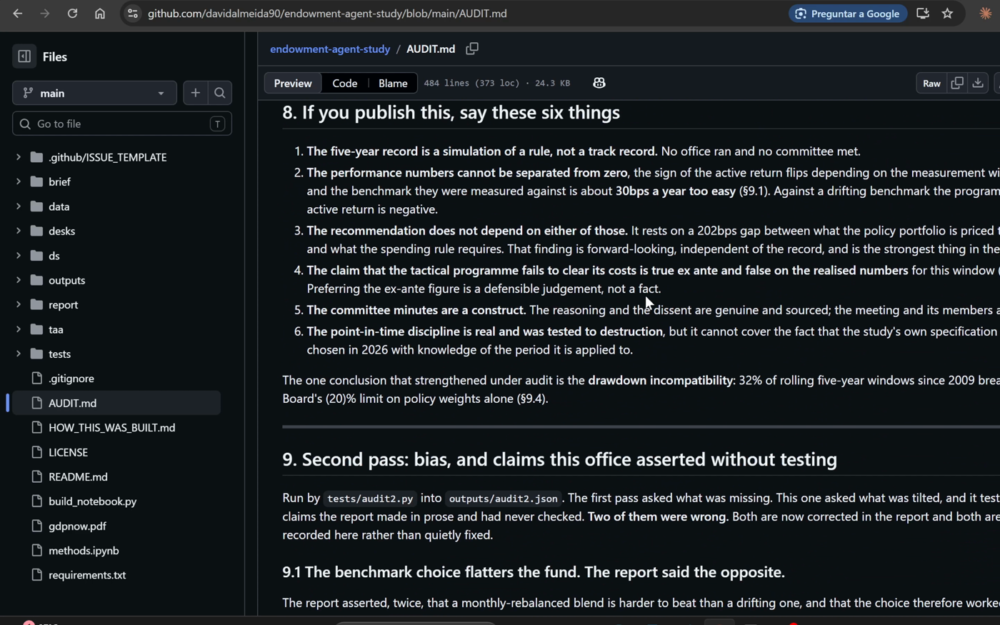

One written brief. No follow-up. Claude Opus 5 was made Chief Investment Officer of an $850M university endowment, told to staff an investment office, and made to prove its own work.
The agent was handed two governing documents (an Investment Policy Statement and a mandate extract) and a ~5,000 word brief. It was not told the recommendation, the methods, the file layout, or the tests. Those are the agent's work.
From that brief it constituted an investment office of six independent desks, ran them concurrently as subagents, kept the Quantitative and Macro desks blind to each other, gave the Risk desk a compliance test that can only pass or fail, and built a point-in-time data wall so no decision could ever see a number published after its own date. Then it simulated five years of quarterly decisions, wrote the trustee report, built an interactive dashboard, and audited itself, twice.


A desk exists only if its work can run without waiting on another desk, and if its output can be checked by something other than the desk that produced it. The agent chose the split and named it in the report.

| Desk | Owns | Its check, which can fail |
|---|---|---|
| Capital Markets | Long-horizon return forecasts for all nine lines, and what the policy portfolio is priced to earn | Numbers reconcile to at least three published house forecasts |
| Systematic | What predicts returns out of sample, whether vol management works, the fundamental-law ceiling | Every figure survives a look-ahead test that fails loudly |
| Implementation | Real transaction costs, rebalancing rule design, the reporting standard | Costs reconcile to quoted spreads on the named vehicles |
| Quantitative | An allocation from the signals alone, reached blind to the macro view | Its own out-of-sample stats, reported including when negative |
| Macro | An allocation from the regime and what is priced, reached blind to the model | Every deviation from consensus carries a named falsifier and a date |
| Risk | The compliance test, as code, run against every proposed allocation | The test itself, shown rejecting a non-compliant allocation |


The two views must not meet. The Quantitative and Macro desks each produced an allocation in writing before reconciliation, blind to each other. They disagreed by 16.5 percentage points on Treasury duration. That disagreement is reported, not smoothed over, which is the whole reason for running them blind.
The wall. Every read of historical data passes through a single function that takes an as-of date and refuses anything published after it. A decision in September 2022 sees the September 2022 data vintage and nothing later, because 2022 Q2 GDP first printed at (0.93)% and did not cross zero until 791 days after the print. Under most regime frameworks that revision reverses the tilt.
The desks were told to cite, and to prefer work that reports when a result fails. These are the papers the memos actually lean on, pulled from the desk write-ups. The out-of-sample test the whole engine is built around is Campbell–Thompson and Welch–Goyal. The reason the agent ends up trusting almost none of its own signals is the replication literature in the second block.
Full citations, with the survival percentages and the falsifiers each desk attached, are in the desk memos.
This is the whole of what the agent was told. About 5,000 words. It sets the role, the two governing documents, the office structure, the independence rule, the risk veto, the standards of proof, and the deliverables, then gets out of the way.
You are the Chief Investment Officer of the Ashcroft University Endowment. You
owe the trustees a tactical asset allocation recommendation for the coming
twelve months, delivered as a full report, and you owe it through a process
they can audit.
Two documents govern, and read both before anything else.
`IPS.pdf` is the Investment Policy Statement the Board adopted, and it is the
authority. It carries the objectives and the constraints, and it also carries
the governance: who determines policy, who executes it, who monitors it, how
the Committee is composed, what it may and may not approve, and what happens
when a limit is breached. Section 2 is the part most analyses skip and it is
the part that tells you how this office is meant to work.
`MANDATE.md` is the working extract the office keeps beside it, the same
numbers in a form you can compute against. The two are meant to agree. If you
find a place where they do not, the IPS governs and you say so in the report.
The 8.1% required return, the −20% drawdown limit, the 200bps tracking-error
budget, the opportunity set and the constraint hierarchy all bind on what you
can recommend. Where an analysis conflicts with them, they win.
## How this office is constituted
You are not doing this alone. The endowment runs a real investment office and
the trustees will read the process as closely as the recommendation.
The office has independent desks. A desk exists because its work can be done
without waiting on another desk, and because its output can be checked by
something other than the person who produced it. A desk that only reviews
someone else's work is not a desk, it is a delay, and the trustees have seen
that structure before and did not like paying for it.
Four to six desks is the right size for this mandate. Fewer and you are doing
sequentially what could run in parallel. More and you are paying for
coordination you do not need. Decide the split yourself, and open the report by
saying what you chose and what independent work each desk owned.
**Staff them before you start, not once you are stuck.** There is a long list
of instructions below covering data, evidence, compliance and what gets
written, and reading it will make this feel like a careful job for one person.
It is not. It is a wide job for an office, and the desks are how it gets done.
If you reach the end of this brief and have run the whole thing yourself, you
have staffed no office and the report cannot honestly describe one.
**Each desk owes a written paper and a check that can fail.** The paper is
tabled at committee. The check is a test someone else can run that says pass or
fail without a judgement call. A desk that cannot name what would prove it
wrong has not finished its work.
**The desks this mandate actually needs.** Staff these unless you can argue for
better. Each one is here because its work runs without waiting on the others
and because something outside it can say it is wrong. Spawn them as subagents,
concurrently, and name them in the report.
| Desk | Owns | Its check, which can fail |
|---|---|---|
| **Capital Markets** | Current long-horizon return forecasts for all nine lines, and what the policy portfolio is therefore priced to earn | Numbers reconcile to at least three published house forecasts a reader can open |
| **Systematic** | What predicts returns out of sample, whether vol management works, and what the fundamental law caps this programme at | Every figure survives a look-ahead test that fails loudly when violated |
| **Implementation & Operations** | Real transaction costs on the actual vehicles, rebalancing rule design, and the reporting standard | Cost assumptions reconcile to quoted spreads on the named instruments |
| **Quantitative** | An allocation derived from the signals alone, reached without sight of the macro view | Its own out-of-sample statistics, reported including when negative |
| **Macro** | An allocation derived from the regime and from what is already priced, reached without sight of the model output | Every deviation from consensus carries a named falsifier and a date |
| **Risk** | The compliance test, as code, run against every proposed allocation | The test itself, shown rejecting a non-compliant allocation |
The Quantitative and Macro desks are the pair that must not see each other's
work. The other three are research and can run alongside them from the start.
You keep reconciliation, portfolio construction and the writing. Those need
everything in one head, which is exactly why they are yours and the six above
are not.
## The two independent estimates
The quantitative view and the macro view must be reached **without either one
seeing the other's work first**. This is the part of the process the trustees
care most about, because an office where the macro view is written after the
model output is an office with one opinion and two documents.
Independence here means separate working, not a promise to be fair. Two desks
that share everything they know and then write two sections have produced one
view twice. If you are going to claim the estimates were reached
independently, the trustees expect that to be structurally true, and you should
say in the report what made it true.
Each side produces its own allocation, in writing, before reconciliation. Both
drafts go in the appendix, including the parts that turned out to be wrong.
Where they agree, say whether that is confirmation or a shared assumption doing
the work in both. Where they disagree, the disagreement is the finding, and
reconciliation means deciding on evidence and recording what the evidence was.
## The risk desk holds a veto
Risk does not advise. Risk rejects.
The risk desk owns a compliance test that runs against any proposed allocation
and returns pass or fail on every binding constraint: the drawdown limit, the
tracking-error budget, the permitted range on each line, the liquidity minimum,
the board exclusions, the leverage prohibition, and the minimum trade size
against the corridor width. It is code, not prose, and it either passes or it
does not.
**No allocation reaches the committee until it passes.** If the recommendation
you want to make fails the test, the recommendation changes or the report
explains to the trustees why the mandate cannot be met as written. Both are
acceptable answers. Editing the test is not.
Show the test rejecting something. A compliance test that has only ever passed
is not evidence that the portfolio complies, it is evidence that the test was
written to agree.
## The committee
The committee meets, ratifies policy rather than approving individual trades,
and records dissent.
Dissent is only worth minuting when it happened. If the desks agreed on
everything, say so plainly and let the trustees judge whether that is comfort
or groupthink. Do not manufacture a dissenting view to make the minutes look
serious.
The minutes carry: what was tabled and by which desk, what the compliance test
returned, where the two independent estimates disagreed and how it was
resolved, what was decided, who dissented and on what grounds, and what would
cause the committee to revisit it before the next scheduled meeting.
## What each desk has to establish for itself
**This is the work the desks do, and they do it at the same time.** Each
question below is a separate literature with its own sources, and nothing in
one is needed to start another. Send them out together and get on with the
modelling while they run. Working through them yourself, one search after
another, is the slowest available way to reach the same answer, and it puts
every page any of them read into one context window.
I am not going to tell you what the literature says. Find out, and cite what
you find with a source I can open. Where you are reporting something you
remember rather than something you checked, label it as such, because your
training data has a cutoff and several of these numbers have moved.
**Is the mandate achievable at all?** What do the major houses currently
forecast for a ten-year horizon across these asset classes, and what does the
policy portfolio's expected return come to against the 8.1% the spending rule
requires? Several published sources exist and they are free. Take more than
one.
**Does the policy portfolio survive its own drawdown limit?** Test it against
history before tilting anything.
**What actually predicts asset class returns, and how well?** There is a large
literature and a large literature attacking it. Find both. Establish what
fraction of published predictors survive out of sample, because that fraction
is the prior you are updating from, and it is not the fraction most
practitioner writing implies.
**Does volatility management work?** Separate two claims that get conflated:
whether volatility is forecastable, and whether scaling exposure by a
volatility forecast improves risk-adjusted returns. Those have different
answers.
**How much can a tactical programme earn?** There is a standard result relating
the information ratio to skill and to the number of independent decisions.
Apply it to this mandate honestly, with the tracking-error budget as given,
before recommending any position. If the arithmetic says the programme cannot
clear its costs, that is the finding and the committee should hear it.
**How should the portfolio be rebalanced?** What sets the optimal corridor
width, which way does each determinant push, and should corridors be uniform
across lines. Does threshold rebalancing beat calendar rebalancing, by how
much, and does the destination matter as well as the trigger.
**What does implementation cost?** Real transaction cost estimates for index
vehicles. Figures quoted for institutional single-stock trading do not apply.
Budget turnover against expected alpha explicitly.
**What standard governs presenting performance against a benchmark?** There is
a formal global one, including which risk statistics must be shown for the
benchmark and not only the strategy, and how a blended benchmark must be
disclosed. Find it and follow it.
## The study window, and what the office has been doing in it
**The last five years, ending today.** Sixty monthly observations, which is
very thin, and you should say how few genuinely independent observations sit
behind any statistic you quote. A five-year window contains one or two regimes
at most, so establish which ones this one holds and be honest that a Sharpe
ratio computed on it carries a standard error wide enough to contain most
answers.
Treat those five years as **years this office has already run**, not as a
backtest of a rule. The committee has met quarterly throughout, twenty meetings
in all, and each meeting took a decision: hold, tilt, or unwind. The trustees
are asking to see that record.
**The window is a parameter, not a constant baked into the analysis.** Start
and end live in one place, every stage reads them from there, and changing them
and rerunning reproduces the entire study on the new window with no other edit.
Someone should be able to ask for three years, or ten, or a specific crisis,
and get a coherent answer rather than a traceback. Say in the report what
happens to your conclusions when the window moves, because on sixty
observations it will move them.
The dashboard carries the same control: the reader picks the window and the
performance comparison redraws.
**Returns are reported monthly against the benchmark**, as a series a reader
can take away and check, with the strategy, the benchmark and the active
difference in the same table for every month in the window. Annual and
since-inception summaries sit on top of that series rather than replacing it.
## The record over five years
The deliverable the trustees actually read first is the log of what was decided
and why, meeting by meeting. **Every allocation change over the five years
needs a reason attached to it**, and a reason means something a trustee could
disagree with.
For each quarterly decision, the record carries:
- the date, and the allocation before and after
- **what changed and why**: which signal moved, what it read, what the macro
view was, and what tipped the decision
- which mandate constraint was binding at that moment, cited by name
- what the compliance test returned on the allocation that was adopted
- whether the two desks agreed, and if not, who was overruled and on what
- what the committee said it would watch before the next meeting, and whether
that thing subsequently happened
A decision recorded without a reason is a number in a spreadsheet. A reason
that just restates the number ("reduced equity because the equity signal fell")
is not a reason either. What matters is why the committee found that
persuasive when it had the option to ignore it.
**Where a decision was mechanical, say so.** If the allocation moved because a
corridor was breached and the rule rebalanced it, that is an honest entry and
better than inventing deliberation that did not occur. The trustees can tell
the difference and would rather know which decisions were judgement and which
were the rule running.
**The compliance test runs on every allocation in the record, not only on the
current one.** An office that gates today's proposal and never checked the
twenty that came before it has a control that has never been tested against
its own history. Report how many quarters breached, which constraint, by how
much, and whether the breach was material or a boundary.
## Each meeting knows only what it knew
Guarding the data layer is necessary and it is not sufficient, because the
harder leak is in the writing. You will run the whole five years, see how it
turned out, and only then sit down to record twenty decisions. Everything you
write is therefore written by someone who knows the answer, and hindsight does
not feel like cheating from the inside. It feels like clarity.
So the discipline is explicit.
**A decision's reason is built only from what was on the table that day.** The
signal readings as they stood, the macro data as published by then, the
allocation coming in. If a reason could not have been written on the meeting
date by someone who had only the papers tabled at it, it is not the reason,
it is a story assembled afterwards to fit an outcome.
**The outcome is a separate column, filled in last, and it never appears in a
reason.** Record what the decision earned. Never let it explain why the
decision was taken. "We trimmed equity because valuations were stretched" is a
reason. The same sentence written because you already know the trim worked is
hindsight wearing a reason's clothes, and the second is indistinguishable from
the first unless the discipline is imposed before you start.
**Test it rather than assert it.** No field in a decision entry other than the
outcome may reference a date later than that meeting. That is mechanical, so
check it mechanically across all twenty and report the result.
**Watch items are resolved forward, never backward.** What a meeting said it
would watch is written at that meeting and the text is never revised. The next
meeting records whether it happened. A watch list edited after the fact to
match events is worse than no watch list, because it reads as foresight.
**Say where the inputs are anachronistic.** Some things genuinely cannot be
reconstructed as they stood: a published house forecast from three years ago is
often simply gone. Where you have used a current-vintage input in a historical
decision, say so at that decision and say what it would have changed. An
acknowledged anachronism is a limitation. An unacknowledged one is a backtest
that cannot be trusted anywhere.
## Standards
**Historical analysis must use only what was knowable at the time.** Hard
requirement, and how you meet it is your problem to solve.
Here is why the office cares, with a number. US real GDP for 2022 Q2 was first
published at −0.9% on 28 July 2022. It reads positive today. The revision did
not cross zero until an annual benchmark revision more than two years later. So
a desk backtesting off today's values spends those two years believing the
economy grew in a quarter where every person actually trading it saw a
contraction. Under most regime frameworks that flips the reading and reverses
the tilt. The backtest looks clean the entire time. Check the actual vintages
rather than taking my version of this on trust, and put what you find in the
report, because it is the clearest thing you will show the trustees all year.
That failure is invisible from inside the analysis. Which is why I do not want
care taken. I want a wall.
**One choke point.** Every read of historical data goes through a single
function that takes an as-of date and refuses to hand back anything published
after it. Not a convention the desks agree to follow. The only route in. If any
module can reach a series without passing that date, the wall has a hole, and
the hole is where the leak will be.
One choke point means one module, not one worker. Build it once, early, and
every desk imports it. It is a reason to centralise the *code*, and it is not a
reason to keep the *work* in one place, so it changes nothing about how the
office is staffed.
Two things make this harder than it sounds and both have caught people who
thought they had it handled. Economic statistics get revised, sometimes years
later. And a figure released after your trade date is a look-ahead even when the
observation is correctly dated earlier, because publication lags the period it
describes: an unemployment print for March that lands in April is April's
information.
**Then prove the wall stands.** Plant a violation, show it caught. Then do the
part that actually convinces me: break the enforcement on purpose, rerun the
suite, and show it going red. A guard nobody has watched fail is a guard nobody
has tested, and if deleting the check leaves the tests green then the tests were
never checking anything. Both outputs go in the verification artifacts.
**Build it in this folder.** Whatever this study needs, you write here. If a
helper or a small library would be useful, build it. Do not go looking for one
elsewhere on this machine and import it. An analysis that only reproduces on the
machine it was written on has not been reproduced, and a trustee handed this
folder should get the same numbers on their own laptop with nothing else
installed.
**Public data only.** Nothing behind a paywall, and more is free than people
assume. If something genuinely needs credentials, say so in the report and work
around it. Do not go looking for keys on this machine and do not read `.env`
files or credential stores. An analysis that needs a subscription is out of
scope by design, not blocked.
**Out of sample means out of sample.** Strict chronological order, no overlap,
nothing tuned on the test period. Report R²_oos against the expanding
historical mean and say plainly when it is negative.
**An asset class needs an investable vehicle to have existed at the time.**
Either respect those dates or state that implementation is assumed. Silently
mixing the two is the quiet look-ahead that makes long backtests of modern
portfolios look better than anything anyone could have held.
**Process data with scripts, never by reading it.** Pull to disk, compute in
Python, read back only summaries.
## Deliverables
**A full report, designed like an institution wrote it.**
**Look for a house design system before you write a line of CSS.** A design
skill, a synced design project, a folder holding a tokens file and component
previews, a brand document. Look properly: `ds/`, `design-system/`,
`colors_and_type.css`, `*brand*.md`, `preview/`, and any design skill available
to you.
If you find one, **read the tokens file and use the tokens**, not your memory of
the two colours somebody mentioned. A system typically carries twenty or more
named values covering panels, hairlines, slate text, chart series and the
benchmark line, and a report built from the two you remember lands close enough
to look plausible and wrong enough to look off beside the real thing. If it
ships component previews, follow them rather than reinventing the same
components worse. Say in the report which system you used.
Do not paraphrase a design system that is sitting right there, and do not invent
a second one alongside it.
**Use the brand assets if they exist.** A wordmark, a symbol, imagery. A report
carrying the firm's actual mark reads as the firm's document. One that opens on
a bare heading reads as a draft.
**If there is no house system, choose one and commit to it.** One restrained
palette, roughly two colours plus ink and paper, one typeface used throughout.
Write the choice down at the top of your stylesheet so every artifact reads as
the same document rather than as four documents that met once. Say in the report
that you picked it and why, because a reader should never wonder whether the
look was deliberate.
Either way, these hold, and they are the difference between a report that looks
institutional and one that looks generated:
- Print-first, dense, modelled on a monthly fund report rather than a web page
- Tabular lining numerals with no exceptions, so columns of figures line up
- **No red and green anywhere.** Direction comes from parentheses on negatives
and position relative to a zero axis. Roughly one man in twelve cannot
separate them, and a trustee document is the wrong place to find out
- No rounded corners, no drop shadows, no gradients used as decoration, no
three-up card grids, no icons, no centred body text, no pill tags or coloured
status badges
- Separate blocks with a section head, a hairline rule and whitespace, never a
box
Those last two lines are the tells. Every one of them is a default that arrives
when nobody made a decision, and a reader who works in finance clocks them
immediately.
**The report is charted, not tabulated.** This is where reports like this
usually fail: everything becomes a table, because a table is what falls out of
the analysis. A monthly fund report is mostly pictures with tables supporting
them, and the ratio matters. Expect somewhere around a dozen charts.
The rule: **if a number series has more than about eight points and a reader
would look for a shape in it, it is a chart.** Cumulative performance against
the benchmark, the rolling drawdown against the limit, active weights as a
diverging bar around zero, the annual return grid, tracking error over time,
the corridor position of each line. Those are shapes. A reader cannot see a
shape in a column of sixty numbers and will not try.
Keep tables for what tables are good at: the allocation with its ranges, the
compliance results, the decision log, anything a reader needs to read a single
row of precisely.
Draw the charts inline as SVG you generate from the data. No chart library
loaded from a CDN, nothing that needs the network to render, no image of a
chart. The report has to open from disk on a machine that has never seen it and
look exactly the same.
**The first page carries the numbers that matter, in a form you can read
standing up.** The recommendation, the period return against the benchmark, the
drawdown against its limit, tracking error against its budget, and whether
compliance passed. A trustee who reads only page one should leave knowing the
position. Anyone who has to hunt for it on page four has been given a document
that was written for the author.
**The report covers the trailing twelve months.** It is the annual report to
trustees, so it reports the year: what the office did over the last four
quarters, how the portfolio performed against the benchmark, and what is
recommended for the next twelve months. The five-year record sits behind it as
the separate document described below, referenced rather than reproduced.
The report carries, in this order: the recommendation for the coming year on
page one with no hunting; the office structure and what each desk owned; the
trailing twelve months against the benchmark, quarter by quarter; the four
decisions taken this year and what each was based on; whether the mandate is
achievable and by what margin; capital market expectations line by line with
sources; the systematic evidence including the full R²_oos table; the macro
view with every deviation, its source and its falsifier; the two independent
allocations side by side before reconciliation; the reconciled allocation with
active weights and ex-ante tracking error; the compliance test output; this
quarter's committee minutes; the risk table; the rebalancing policy and
operating calendar; and the assumptions.
**Performance against the benchmark is the centrepiece**, presented to whatever
standard your research establishes as the professional one. Strategy and
benchmark side by side for every period, never the strategy alone. Show the
trailing year in the report and the full five years in the record, and say
plainly where the five-year number disagrees with the one-year number, because
it usually does and the trustees will have noticed.
**The five-year decision record, as its own document.** Twenty quarterly
entries in the format set out above, each with its reason, its binding
constraint and its compliance result. This is the document a trustee reads to
decide whether the office has been thinking or drifting, and it should survive
being read on its own.
It closes with the honest scorecard: how many of the twenty decisions helped,
how many hurt, how many were too small to tell, and what the office got
consistently wrong. If the five years say the tactical programme added nothing
after costs, the record says so in a sentence a trustee cannot miss.
**The committee minutes are a real deliverable**, not a flourish. A trustee
should be able to read them alone and understand what was decided and why.
**A dashboard, and it is the five-year decision log rather than a snapshot.**
Interactive, self-contained, one HTML file that opens from disk with no network.
Same design system.
A snapshot dashboard answers "where are we". This one has to answer **"has this
office been thinking, and has it been right"**, which is a question about twenty
decisions and not about today's weights.
It carries:
- **The twenty meetings as the spine.** One row each: date, hold or tilt or
unwind, what moved and by how much, the signal reading that drove it, the
constraint that bound, whether compliance passed, and what it earned. Openable
to the full reasoning for that meeting. Sortable and filterable by decision
type, by binding constraint, and by whether it helped or hurt.
- **The active return path with the decisions marked on it**, so a reader can
see which meeting preceded which move. Cumulative, against the benchmark.
- **Which constraint bound, as a frequency.** If the same constraint bound every
quarter, that is the most important fact in the whole record and a reader
should see it without counting. It means the signal was never what set
position size.
- **The scorecard.** How many decisions helped, how many hurt, how many were too
small to tell, and the net in basis points a year against the turnover it
cost. State the net plainly, including when it is negative or indistinguishable
from zero.
- **What the office got consistently wrong.** Group the losing decisions and say
whether they share a cause. Five unrelated bad calls and five instances of the
same bad call are different findings, and only the second one is fixable.
- **Current position** last, not first. It is one quarter of twenty.
**Say what is missing.** If a data series failed to load for some quarters, the
dashboard shows which and how many, rather than rendering a gap as though it
were a zero. A record that silently drops an input for half its span is telling
the reader something untrue about how much evidence sits behind it.
**The code.** Every algorithm as a runnable Python file. Data pulls, signal
construction, risk model, optimiser, the five-year simulation, rebalancing, and
the compliance test. Someone should clone the folder and reproduce every
number.
The simulation emits the decision record as data rather than as prose written
afterwards: one row per quarterly meeting carrying the date, the weights before
and after, the signal readings that drove it, the binding constraint, and the
compliance result. The written record is that table with reasoning attached. A
record composed by hand from memory of what the backtest probably did is the
thing this is designed to prevent.
**The verification artifacts.** The look-ahead test, its output showing it
passed, and evidence it catches a planted violation. The compliance test, and
evidence of it rejecting a non-compliant allocation. A test that has never
failed is not evidence of anything.
**A methods notebook, and every method tied to the paper it comes from.** A
single Jupyter notebook a reader works through top to bottom, covering the
quantitative machinery: how signals are built and standardised, how
out-of-sample R² is computed and against what benchmark forecast, the
volatility model, the fundamental law arithmetic applied to this mandate, the
covariance estimate and any shrinkage, the optimiser and its constraints, and
the rebalancing simulation.
For each method, in this order: **the paper**, named with author and year and a
link a reader can open; **what it claims**, in two or three sentences; **the
implementation**, as a cell that runs against this study's own data rather than
a toy example; **the output**, the number this study actually uses; and **where
your implementation departs from the paper**, which is the part usually left
out and the part a reader most needs.
That last one matters. Almost every implementation deviates from its source,
through a shorter window, a different standardisation, a shrinkage the original
did not use. A deviation stated is a modelling choice. A deviation unstated is
a citation doing work it has not earned, and a reader who knows the paper will
find it.
The notebook runs start to finish on a clean kernel and reproduces the figures
quoted in the report. If a number in the report cannot be traced to a cell in
here, one of the two is wrong.
Prose between the cells, not just code with comments. A reader should be able
to follow the argument without executing anything, then execute it and get the
same answer.
**The evidence appendix.** Every claim taken from the literature, with a source
I can open, marked according to whether you verified it or recalled it. Plus
both pre-reconciliation allocations.
## Say where you land against the base rate
Once you have established what fraction of published signals survive out of
sample, state plainly whether your conclusion sits with that prior or against
it. If you found a signal that works, you are claiming membership of a
minority, and I want to see why yours belongs there. If you found nothing, say
so, and the recommendation is policy weights.
Both answers are acceptable. An unexamined one is not.
## One thing I do not want
Confidence the evidence does not support, and a committee that exists to
approve. If the honest answer is that the signals are weak, the macro view is
close to consensus, and the endowment should sit at policy weights while the
trustees revisit the spending rule, that is the answer I want, written plainly,
minuted properly, and backed by the numbers.
The point of the exercise was not a good-looking report. It was whether an agent given a real mandate and an obligation to be audited produces work that survives being audited. Here is the honest scorecard it wrote about its own study.



taa/, the study itselfThe tests were written to fail, then shown failing, then shown passing. A mutation test removes the look-ahead protection one piece at a time and requires the suite to go red; its first run found three surviving mutations, and two of those turned out to be defects in the tests rather than the code. The study reproduces from the folder alone, and the analysis window is a parameter, so asking for three years or ten reruns the whole thing with no other edit.
Stated plainly: the study is reproducible from the repository. The process that generated it ran in a configured environment (a global instruction file, installed skills, MCP servers), not a clean room, and that is said so no one mistakes it for a bare-install result.